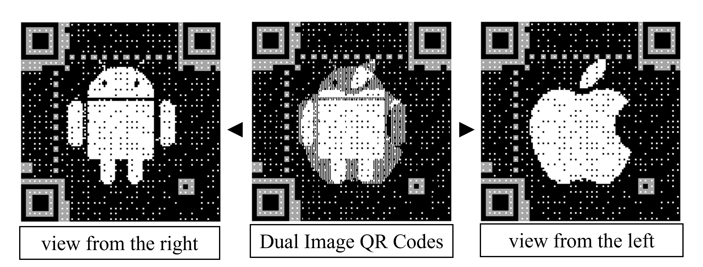

Dual Image QR Codes: The Best of Both Worlds
Owerview
Abstract

Due to the high adoption rate of QR codes across the world, researchers have been attempting to improve classical QR codes by either improving their appearance to be more meaningful to human perception or improving their capability to store more messages. In this work, we propose dual image QR codes that aim to improve both aspects while preserving the ability to scan by standard QR code readers. We improve the appearance of the QR code using the halftone QR principle and increase the capacity of the QR code with the lenticular imaging technique. To test the robustness of the proposed QR code, we evaluated six important parameters and searched for appropriate conditions through 24,000 combinations. From the experiments, we found 3,714 appropriate conditions which achieved 100% successful scanning rate. Lastly, we also list examples of use cases to use in real-world situations for the proposed dual image QR codes.